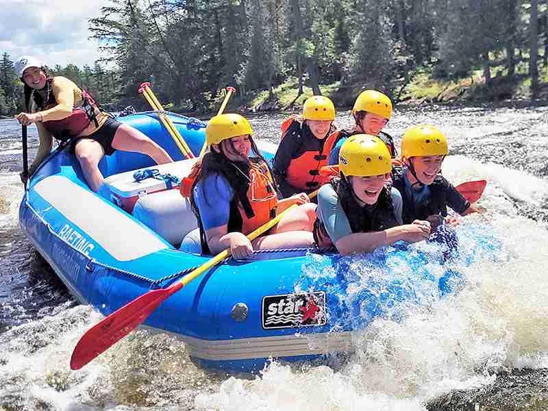
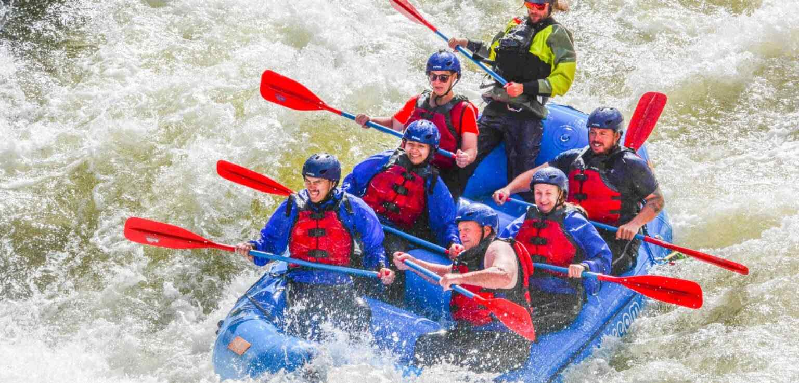
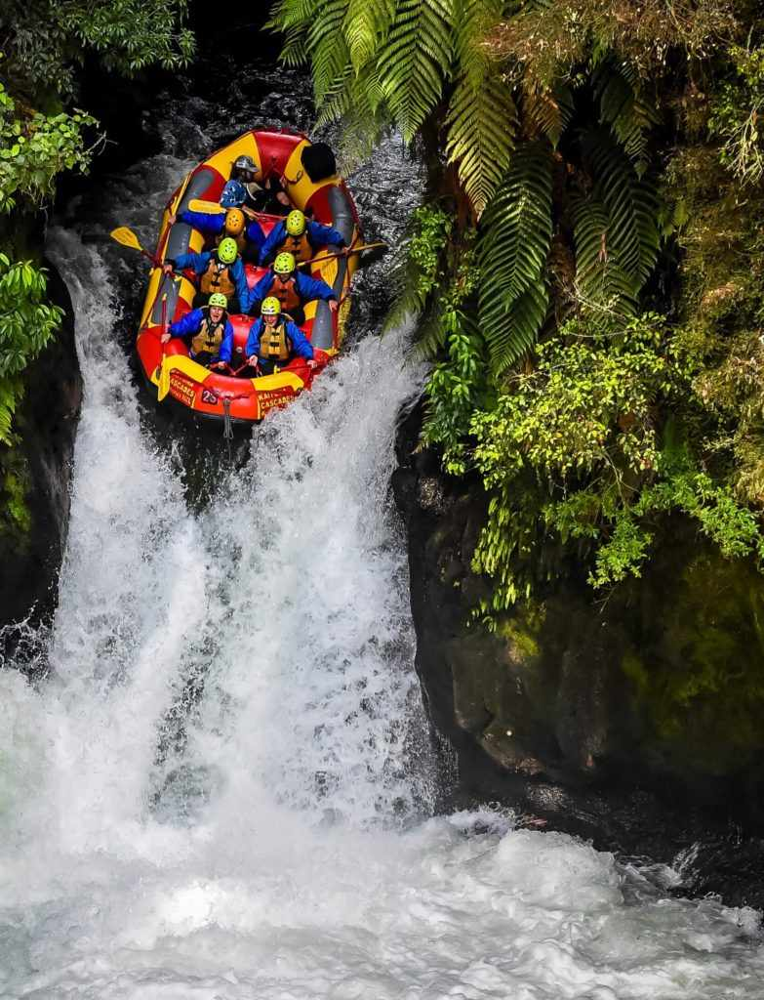

Family Splash Adventure

Class I-II Rapids | Duration: 2 Hours
Perfect for beginners and families with children. Enjoy gentle rapids, stunning canyon views, and a relaxing swim in calm waters under the guidance of our certified experts.
Explore our carefully crafted river adventures. Whether you are looking for a calm family ride or an extreme adrenaline rush, WhiteWater Odyssey has the perfect trip for you.

Perfect for beginners and families with children. Enjoy gentle rapids, stunning canyon views, and a relaxing swim in calm waters under the guidance of our certified experts.

Our signature trip! Challenge yourself with thrilling drops, continuous waves, and beautiful wild scenery. Includes a riverside lunch to recharge your energy.

Designed strictly for experienced thrill-seekers. Push your limits on our most demanding route, featuring powerful drops, tight technical maneuvers, and pure adrenaline.
Spaces fill up quickly during the peak season. Book your spot today or contact us for custom group packages.
Contact Our Team